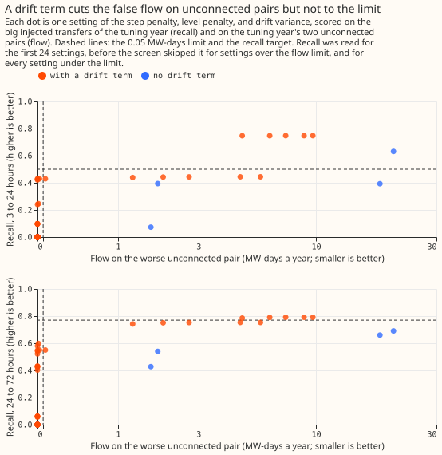
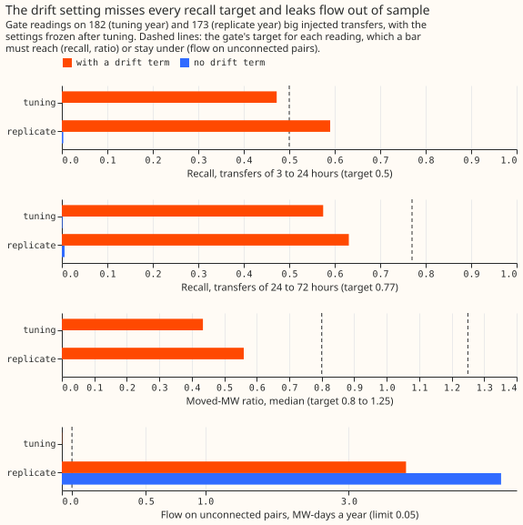
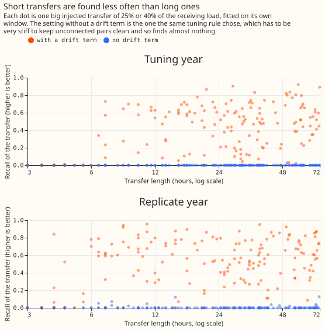
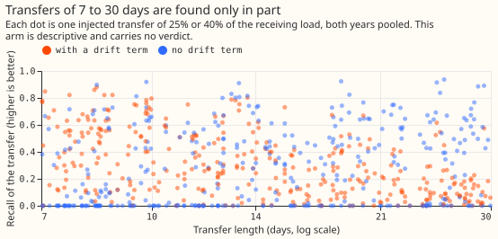
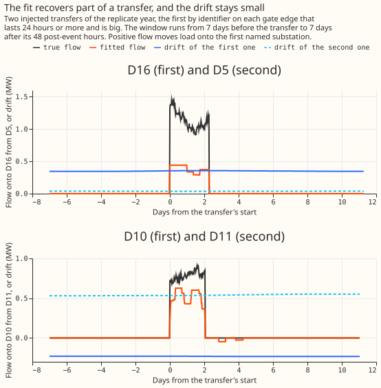

Differentiable physics, NRA: edge flows with a per-node drift term
The drift term cuts false flow by half to three quarters at equal or higher recall, but the fit
still fails the known-answer gate, so the verdict is inconclusive. At the matched setting (step
constant 3, level constant 0.3) the placebo flow falls from 20.42 MW-days a year without a drift term
to between 9.70 and 4.83 with one. Recall for transfers of 3 to 24 hours rises from 0.631 to about
0.75. None of the 96 settings we screened met the recall targets and the 0.05 placebo limit
together. The setting the tuning year chose finds 0.575 of the injected megawatts of 24 to 72 hours
in the tuning year and 0.631 in the replicate year, against a target of 0.77. The fit reports the
transfers it does find at 0.64 to 0.72 of their true size.
In the replicate year the chosen setting puts 4.27 MW-days a year on one pair with no interconnection, and part of that flow sits in two unlabelled jumps. The pair is D16 and D10. D10 has two jump windows that carry no label (see the data-processing page). Of the 4.27 MW-days, 1.58 lie inside those windows. Separately, 0.41 lie within 48 hours of a hand-filtered event and 3.86 lie away from one. The other replicate placebo pair, D5 and D11, holds 0.82 MW-days, all away from events. The placebo failure therefore partly reflects real, unlabelled structure in D10's data, and partly reflects drift that the fit leaves unexplained. Only the replicate year is independent of tuning.


Question and results
Question. With a per-substation drift term, can a flow fit recover injected transfers that last hours to days without putting flow on pairs of substations that are not connected? The plan below was registered before any fit and was followed, except for the departures listed under "Deviations". The normal running arrangement (NRA) is the layout of the electricity network without transfers.
Tuning found no setting that meets both targets. Of the 96 settings screened, 38 were under the 0.05 MW-days limit on the placebo pairs, and 36 of those had a drift term. Among those 38 settings, the best margin was 0.714. The margin is the smaller of recall for 3 to 24 hours over 0.5 and recall for 24 to 72 hours over 0.77, so a margin of 1 means both targets are met. The chosen setting is step constant 3, level constant 1.0, drift variance 0.0016 points squared a day. Its tuning-screen recall is 0.429 for 3 to 24 hours and 0.548 for 24 to 72 hours, with 0.0007 MW-days a year on the full-year placebo.
The gate fails three of its four readings in at least one year, and release share passes in both
years. A big transfer moves at least 10% of the receiving substation's 99th-percentile demand, and
the tuning year holds 182 of them and the replicate year 173. The gate recall differs from the
tuning-screen recall above because the gate draws set G with a new seed. Release share is the share
of found transfers whose causal flow has fallen under 20% of the moved megawatts soon after the
transfer ends.
| Reading | Needs | Tuning year | Replicate year |
|---|---|---|---|
| Moved-MW ratio | 0.8 to 1.25 | 0.434 (fail) | 0.560 (fail) |
| Recall, 24 to 72 h | at least 0.77 | 0.575 (fail) | 0.631 (fail) |
| Recall, 3 to 24 h | at least 0.5 | 0.472 (fail) | 0.590 (pass) |
| Placebo, MW-days a year | under 0.05 | 0.0007 (pass) | 4.27 (fail) |
| Release share | at least 0.5 | 0.987 on 75 found (pass) | 0.95 on 100 found (pass) |

The benchmark without a drift term is degenerate. At its best setting (step constant 100, level constant 1.0) the fit finds almost nothing (recall 0.002) and puts no flow on the tuning-year placebo pairs. In the replicate year the benchmark still puts 7.35 MW-days on a placebo pair. The comparison that matters is therefore the matched-recall comparison above.
The level penalty shrinks the transfers that are found. The median ratio of fitted to true mean flow over found transfers is 0.644 in the tuning year (75 found) and 0.721 in the replicate year (100 found). The moved-MW reading fails because of this shrinkage, whatever the recall.
Transfers of 7 to 30 days are partly absorbed, as predicted. Recall is 0.30 in the tuning year and 0.36 in the replicate year with the drift term, and 0.36 and 0.47 without the drift term. This arm is descriptive and carries no verdict.

Real events
On real data the fit finds 1 of 16 big labelled transfers, and 6 of its 120 flow runs match a logged event. This comparison is descriptive and was fitted after the gate. A decision edge is an interconnection between two Primary substations that the fit may put flow on, and the decision graph is the set of those edges. The graph holds 24 labelled transfers (10 in the tuning year, 6 in the replicate year, 8 in the scored year), of which 16 are big and 4 have no known direction. The one big event found is on D3 and D8, lasts 54.5 hours, and is labelled 2.5 MW against a fitted mean flow of 1.52 MW. A flow run is an unbroken stretch of nonzero fitted flow on one edge. Of the 120 flow runs (7 in the tuning year, 55 in the replicate year, 58 in the scored year), 6 matched a labelled transfer within 24 hours, 2 in each year, so precision is 5%.

Deviations, checks, and what follows
Deviation: we added 36 settings to the grid, on the tuning year, before any gate reading. No registered setting met both targets: level constant 0.3 met the recall targets but not the placebo limit, and level constant 1.0 met the placebo limit but not the recall targets. The manager approved the extra settings, and the 0.05 limit is unchanged.
Deviation: the screen reads the placebo first. It skips the recall reading whenever the placebo is at least 0.05, to save compute.
Step 6 was skipped: the comparison with experiment 130's detector. The plan allowed a list of the transfers that experiment 130's refit-offset neighbour-count detector misses, with this fit's recall on them. Experiment 130 injected a different draw of transfers on other edges. A subset comparison was therefore not cheap, and this page reports no comparison.
No forecast contrast ran, because the gate failed. The check of the median forecast against the mean forecast per site therefore does not apply.
The thresholds, seeds, and chosen settings were written before the gate was read. The module
change passed its 56 tests. Every number on this page comes from report.txt.
The audit trigger "a control fails" fired. The placebo control failed in the replicate year. The manager agreed that no Opus audit is needed, because the placebo failure is the finding and the post hoc check of D10's unlabelled jumps above tests an explanation for it. The triggers that concern forecast contrasts do not apply. The prediction put the chance of all four readings passing at about one in three, so the failure does not contradict it.
Each fit window around an injected transfer is shorter than the 72-day placebo tiles. A year-long fit may behave differently from a fit on either.
What the next experiment should answer. The drift term reduces false flow but does not reach the recall targets and the placebo limit together, and the level penalty shrinks the flows that survive. A candidate next step is a topology check on candidate flows, or a smaller level penalty combined with a check for unlabelled jumps in the placebo pairs. This page does not commit the project to either.
Plan
The plan tests one change to experiment 116: a drift offset for each substation. This page is the plan, committed before any fit. Experiment 116 fitted flows on the interconnections between Primary substations (the normal running arrangement, NRA, is the layout without those transfers). Its flow fit found injected transfers only at settings that also put flow on pairs of substations with no interconnection. A drift audit on 116's residuals (exploratory, no fit) found that slow drift alone gives 23 and 38 MW-days a year (megawatts of flow summed over the days of a year) on the two tuning placebo pairs. The drift is mostly shared by both substations of a pair, not opposite-signed, so this experiment adds a per-substation offset, not a pair term.
Question and method
Question. With a per-substation drift term, can a flow fit recover injected transfers that last hours to days without putting flow on unconnected pairs?
Model. The objective is 116's: the Huber loss (quadratic near zero, linear beyond 1.5 noise
scales) on the residuals of the frozen convex model, plus a step penalty and a level penalty on each
flow. This experiment adds an offset d_i(t) for each substation. The offset is a random walk. Its
change over one day has variance q_d, in points of effective capacity squared (a point is 1% of
the substation's effective capacity), so the variance per half-hour row is q_d divided by 48. The
fit alternates between flows and offsets until both settle (studies.dp_edge_flow.fit_flows, drift
term in pull request 1431). The residuals are the arm-A0 residuals of experiment 116, so the drift
term is the only change. Only half-hourly flows are used.
A big event moves a substation by at least a set number of megawatts. The threshold is 10% of
the receiving substation's 99th-percentile cleaned demand, taken from rows of the tuning year's cut
that hold a reading and fall outside hand-filtered events. A transfer is big when its mean moved
megawatts reach the threshold; every injected transfer lasts at least 3 hours. The threshold is 0.56
to 1.1 MW at the four gate receivers, is frozen at the tuning cut for every year, and is set before
any gate reading (e00131_threshold.py). In set T, injected transfers of 25% and 40% of the
receiving load clear the threshold in most cases, and transfers of 0.5 MW and 10% rarely do. The
script also prints 5 hand-filtered events, picked by a fixed random seed, beside the threshold, and
the page reports that comparison. Events below the threshold are not looked for.
Injected transfers. The code is 116's, with new seeds. Sets T (tuning) and G (gate) hold 400
transfers each, balanced over 4 sizes (0.5 MW; 10%, 25%, and 40% of the receiving load) and 2
durations. The durations are 3 to 24 hours and 24 to 72 hours, log-uniform within each band. The
split into two equal-count bands departs from a single log-uniform draw over 3 to 72 hours, because
the gate reads the two bands separately. Set L holds 200 transfers of 25% and 40% that last 7 to
30 days. The two gate edges are D5–D16 and D10–D11. Each transfer is fitted on a window that starts
7 days before it and ends 7 days after its 48-hour post-event rows, so the drift term has a week of
context on each side. Windows are shorter than the 72-day placebo tiles below, and a year-long fit
may behave differently from either; the page says so.
Placebos. The placebo pairs are 116's pairs without an interconnection (tuning D5–D10 and D16–D14, replicate D5–D11 and D16–D10). Each is fitted in 72-day tiles over the year (the last tile is shorter, and the total is scaled by rows covered to a year), with the placebo path listed first and last. The larger flow counts, because the zero placebo reading of 116 came from the path order. Placebo tiles contain whatever real events fall in them, and injected windows exclude events within 48 hours.
Tuning (tuning year only)
Stage 1 screens 60 settings. The grid is step constant {3, 10, 30, 100, 300} × level constant
{0.3, 1.0} × drift variance q_d in {none, 0.0001, 0.0004, 0.0016, 0.0064, 0.0256} points² per day,
with a Huber threshold of 1.5 noise scales. The five positive values of q_d give a standard
deviation per day of 0.01 to 0.16 points. The value "none" is the benchmark, the same grid without a
drift term, and is not one of the five tuned values. A level constant of 0 is left out because the
minimiser is then not unique. Each setting is scored on the big transfers of set T and on 4 evenly
spaced 72-day placebo tiles, scaled to a year.
Stage 2 reads the finalists on the whole year. Settings under 0.05 MW-days a year on both
placebo pairs in both path orders at stage 1 are ranked by their margin, the smaller of (recall for
3 to 24 hours ÷ 0.5) and (recall for 24 to 72 hours ÷ 0.77). Ties go to the larger step constant.
The top 3 are re-read on every placebo tile of the year. Among those still under 0.05, the setting
with the largest margin is chosen. The Huber threshold of the chosen setting is then compared at
1.0, 1.5, and 3.0 noise scales by the same rule. If no setting is under 0.05 at stage 1, the setting
with the smallest placebo flow is chosen, the gate is read anyway, and the verdict is inconclusive.
The same rule runs separately for "none", which gives the benchmark's best setting. The chosen
settings are written to decisions.json before the gate is read.
Decision rule
The gate passes only if all four readings pass in the tuning year and in the replicate year. It
is read on the big transfers of set G, drawn in each year, with the settings frozen. Only the
replicate year is independent of tuning: the tuning-year placebo reading repeats the stage-2
computation on the same tiles, and the tuning-year recall readings use a different seed on the same
residuals. The scored year (2025-26) is read only for C2 and C3, once, and only if the gate passes.
The thresholds 0.77, 0.5, 0.05, and 0.8 to 1.25 are experiment 116's, kept by the brief for this
experiment so that the two experiments' gates are comparable.
- Moved-MW ratio. The median over big transfers of the fitted mean flow over the true mean flow on the transfer's edge, over the transfer's rows and signed towards the receiver, lies between 0.8 and 1.25.
- Recall. Recall is the sum over rows of the smaller of the fitted and true flow (positive in the true direction), over the sum of the true flow, pooled over transfers. It is at least 0.77 for transfers of 24 to 72 hours and at least 0.5 for transfers of 3 to 24 hours.
- Placebo. Under 0.05 MW-days a year on each placebo pair of the year, with the placebo path first and last.
- Release. A big transfer is found when its hindsight recall is at least 0.5. At least half of the found transfers must have a causal flow under 20% of the moved MW at the larger of 6 hours and 10% of the duration after the end. The causal flow comes from refitting, with the drift term, the trailing 30 days of residuals up to 3.5 hours before the deadline. The reading needs at least 30 found transfers; fewer counts as a fail. The count is reported.
Not read as a verdict: the 7 to 30 day arm (set L, read in the tuning and replicate years; it
reports whether the drift term absorbs long transfers), the real-event comparison, the benchmark,
and any variant chosen after reading a result (labelled post hoc). Flow on unconnected paths inside
the injected windows is not read.
If the gate fails on any reading, the verdict is inconclusive, and the take-home says whether
the drift is separable from the transfers at this residual quality. Post hoc variants may be
explored, labelled as such, and play no part in the verdict. If every reading fails, the session
stops and asks the maintainer before any audit.
If the gate passes, C2 and C3 run as in experiment 116, with the winter and cold-night
breakdowns. C2 is non-inferior when the upper end of the 98.33% interval for the change in
day-ahead quantile score outside events (training without the found flows, minus training on every
row) is under 0.05 points. C3 improves when the causal flows lower the quantile score on injected
rows and the 48 hours after them by at least 0.5 points. Both met: supported. One met: partly
supported. Neither: not supported. No threshold changes after reading.
Descriptive, no verdict. The hindsight flows of the whole decision graph are compared with the 31 logged pairs and the hand-filtered events (recall and precision, pairs named by D-label only). If experiment 130 has reported by then, the injected transfers and real events that its detector misses are listed with this fit's recall on them. The residuals' noise scales come from rows before the cut, where the frozen model was trained, so they understate the out-of-sample scale; 116 shares this property.
Reviews, compute, and earlier advice
A Sonnet reviewer read this plan before any fit. A Sonnet code review covers the module change
(pull request 1431) and the scripts, and a Sonnet numbers review and a Sonnet prose review cover the
finished page. There is no Opus review. The fits use CPU only, at most 4 workers while the machine
is busy, with memory capped at 12 GB. The plan follows the advice of experiment 116: read the
placebo with the path first and last, and fit a drift term before tuning the penalties. Any new
data-processing finding goes into docs/ml-experiments/data-processing.md with the write-up.